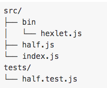

Инструкция throw позволяет генерировать исключения, определяемые пользователем. При этом выполнение текущей функции будет остановлено (инструкции после throw не будут выполнены), и управление будет передано в первый блок catch в стеке вызовов. Если catch блоков среди вызванных функций нет, выполнение программы будет остановлено.
В коде тесты, как правило, складывают в специальную директорию в корне проекта. Обычно она называется tests, хотя встречаются и другие варианты
